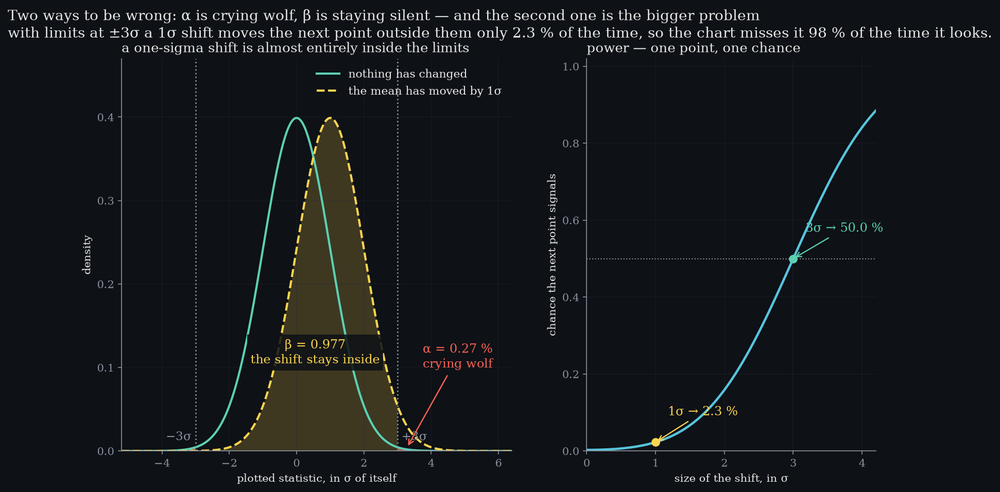
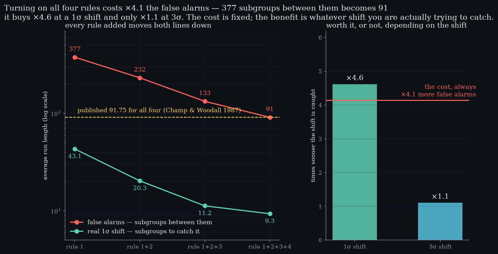

Level 7 · chapter seven
Evidence and decisions
Level 6 priced crying wolf. This is the other way to be wrong — and why adding rules is arithmetic rather than opinion.
after Level 6 — limits are a hypothesis test·leads to Level 8 — capability
- 7.1The other way to be wrongα is crying wolf; β is staying silent, and nobody counts it
- 7.2Powerone point, one chance — and how small a chance
- 7.3The chart throws evidence awaya verdict is not the same as a p-value
- 7.4Four rules, one at a timeeach rule priced, against a figure published in 1987
- 7.5So is it worth itthe cost is fixed; the benefit is the shift you fear
The other way to be wrong
Level 6 priced one decision: a point outside three sigma. αCrying wolf. Priced in Level 6, and the only error a three-sigma limit is chosen against.It costs 0.27 % of subgroups a false alarm, and Level 2 turned that rate into one alarm in 370. What neither level mentioned is the other way a chart can be wrong — staying silent when the process really has moved.
Draw the shifted process against the same limits and the problem is visible before it is named. two ways to be wrongα, crying wolf0.27 %β at 1σ0.977so it is caught2.3 %A mean that has moved by a full sigma sits almost entirely inside them.
So the chance of catching that shift on the next point is 2.3 %. spoken · 0:48“That is the error Level 6 never mentioned, and it is the bigger one.”The chart is not broken. A one-sigma shift simply looks like ordinary noise to a test that only ever sees one point at a time — and this is the bigger of the two errors, because nobody is counting it.

Power
Put a number on it at every shift size and you have the power curve: the chance that one point sees a shift of a given size. chance the next point signals0.5σ0.6 %1.0σ2.3 %2.0σ15.9 %3.0σ50.0 %It is worth reading slowly, because it is unflattering.
The chance the next point falls outside ±k sigma when the mean has moved by delta. Both tails, because a chart does not know which way the process went. At delta = 0 this is the false-alarm rate; at delta = k it is exactly one half.
At two sigma it is 15.9 %. why exactly a halfAt one tail contributes almost nothing and the other contributes .It takes a shift of three full sigma — the mean landing exactly on the limit — before the next point is even a coin toss, and that is not a coincidence: when the mean sits on the limit, half the distribution is on each side of it.
One point, one chance. spoken · 1:36“One point, one chance. That is the whole limitation.”Everything the extra rules do is an attempt to get around that single sentence.
The chart throws evidence away
Consider a point at two and a half sigma. p-value, two-sidedpoint at 2.5σ0.0124point at 3.0σ0.0027the chart's verdictin controlIt is inside the limits, so the chart calls it in control and moves on. Ask instead how surprising it is, and the answer is a p-value of 0.0124 — about one in eighty.
Anywhere else in statistics that is a finding. the same number twiceA point exactly on the limit has a p-value equal to α. The chart is a test with its threshold already chosen.Here it is filed as a pass and forgotten, because the in-or-out rule keeps the verdict and discards the evidence.
A verdict is not the same as the evidence. The extra rules exist to spend what a single point cannot hold — a pattern across several points, none of which is damning on its own.
Four rules, one at a time
The Western Electric rules are usually taught as a list to memorise. what each rule readsrule 1one point beyond 3σrule 22 of 3 beyond 2σ, same siderule 34 of 5 beyond 1σ, same siderule 48 in a row on one sideThey are not a list. They are four purchases, and each one has a price that can be computed.
Switch them on one at a time and watch two run lengths move in the same direction — the subgroups between false alarms, which you want long, and the subgroups to catch a real 1σ shift, which you want short. false alarm every / catches inrule 1377 / 43.1rule 1+2232 / 20.3rule 1+2+3133 / 11.2rule 1+2+3+491 / 9.3Every rule shortens both.
All four together give a false alarm every 91 subgroups instead of 377. corroborationChamp & Woodall, 1987. Agreement with a number derived elsewhere is worth more than internal consistency.That figure was published in 1987 as 91.75, and the simulation here was not told about it — it reproduces it from the rules themselves.

So is it worth it
Line up what the rules cost against what they buy, and the answer stops being a matter of taste.all four rulescost, always×4.1 false alarmsbought at 1σ×4.6 soonerbought at 3σ×1.1 sooner
Against a slow one-sigma drift the rules catch it ×4.6 sooner — more than the ×4.1 in false alarms they cost, so the trade is good. read it twiceThe cost is one number. The benefit is a function of the shift, and the shift is a fact about your process.Against a three-sigma jump they catch it only ×1.1 sooner, because rule one already sees it on the next point. Same cost, almost nothing bought.
So the rules are not good or bad, and the argument about whether to use them is not really about statistics. spoken · 3:44“The cost is fixed. The benefit is the shift you fear.”The cost is fixed; the benefit is whatever shift you are actually afraid of. Level 9 asks the same question of a chart with memory, and gets a better answer.
